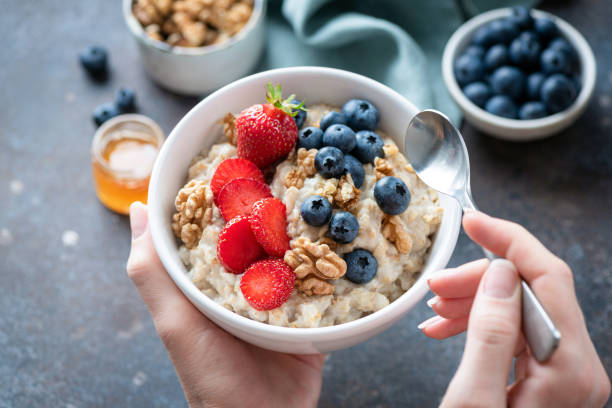

Best Porridge

Description
A recipe for a delicious bowl of hot porridge, courtesy of Arthur Scott.
This porridge will blow you away. Creamy, steel-cut oats in full fat milk, slowly cooked with berries on top.
Ingredients
- Oats 50g
- Full fat milk 200g
Steps
- Cook porridge with milk in pan for 20 minutes or until thick and creamy
- Top with berries or any other assortment of delights
Back to homepage